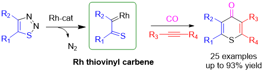
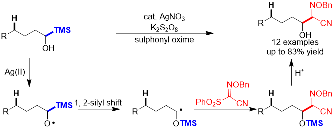

Article
Research Summary
Ziyao Zhang
During my graduate studies supervised by Prof. Ning Jiao, my research mainly focus
on rhodium-catalyzed carbonylation, selective activation of alcohol alpha C-H bond
and total synthesis of anti-COVID 3CLPro inhibitors. Details of my research are shown below:
1. Rhodium-catalyzed carbonylation to construct substituted thiochromenonesThiochromenone is the thio-homologue of
natural product flavone. Its synthesis involves the introduction of a carbonylgroup. CO is the most convenient and
direct carbonyl source. We herein report a carbonyl insertion reaction using1,2,3-thiadiazole as the starting material.
Rh thiavinyl carbene intermediate was efficiently generated and underwent aSonogashira-type carbonylation to afford the
target product.

2. Selective activation of alcohol alpha C-Si bond
There have been few reports on the selective activation of alcohol alpha C-H bond. Alkoxyl radical mediated 1, 2-Brook
rearrangement offered a powerful approach for site selective functionalization. 1, 5-HAT was inhibited in presence of
alcohol C-Si bond. Sulfonyl oxime was used as the radical trap.In April 2021, a completely same reaction was reported
by Xiao Shen et al. (Z. Yang, X. Shen*. Nat. Comunn, 2021, 12, 2131). The project was aborted.

3. Total synthesis of anti-COVID 3CLPro inhibitors
Our group designed 4 different anti-COVID 3CLPro inhibitors base on our unique maleimide/pyrolin-2-one structures.
I independently synthesized inhibitor 1 and inhibitor 2. The key step for inhibitor 1 is the intramolecular annulation
to construct the pyrolin-2-one moiety. I devised two routes. One through Still-Gennari reaction to construct
Z-unsaturated alkene from aldehyde, and another through tetramic acid intermediate built from carboxylic acid. Both
two routes worked, and the tetramic acid pathway performed much better because of its relatively higher yield and easier operation.
The key step for inhibitor 2 is the Curtis Rearrangement to construct the gem-diamine intermediate from carboxylic acid. The
instability of the diamine intermediate added to its difficulty. Eventually the product was furnished with moderate yield and
excellent stereoselectivity.
I instructed my colleague to synthesize inhibitor 3 and inhibitor 4. I designed the synthetic route and carried out the Negishi
coupling and Buchwald coupling reactions on my own. My colleague finished the rest of the steps under my guidance.
 Email
Email